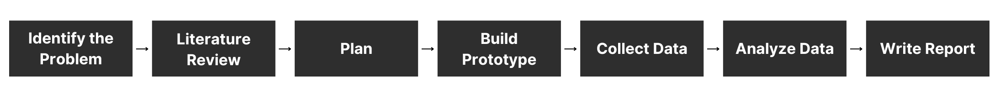
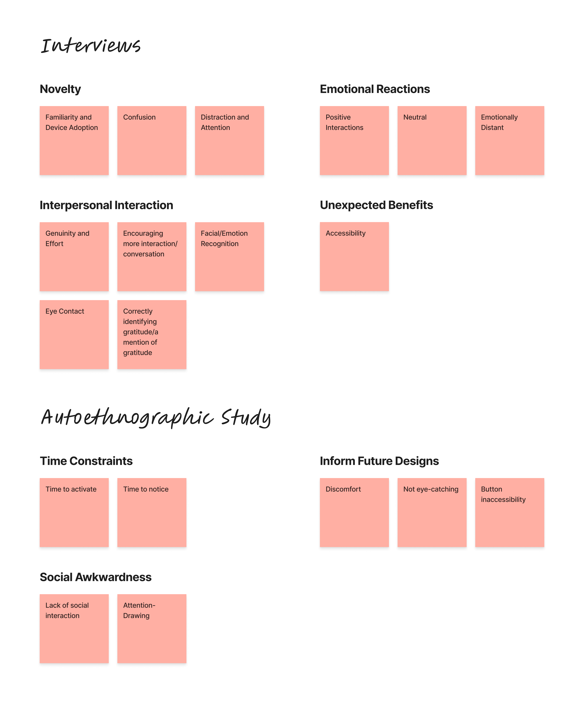

Back to top
Expressing gratitude during the COVID-19 pandemic
Project Type
School Project (Carleton University),
Team of 2
School Project (Carleton University),
Team of 2
Duration
Feb 2022 — Apr 2022,
3 Months
Feb 2022 — Apr 2022,
3 Months
Methods
Literature Review,
Semi-Structured Interviews,
Autoethnography
Literature Review,
Semi-Structured Interviews,
Autoethnography
Key Skills
Prototyping,
User Research,
Thematic Analysis
Prototyping,
User Research,
Thematic Analysis
Overview
The Design Brief
This design brief was given to us during the Emerging Interaction Techniques course at Carleton University. We were challenged with developing a new way to express gratitude using technology and design. The brief encouraged us to think creatively about how technology can be used to spread positivity and foster a culture of kindness and appreciation. The scope of the project was broad, allowing us to focus on different groups, artifacts, and mediums for expressing gratitude.My Role
Prototyper, Researcher — my team member and I split the work equally.Research Process
Initial Research & Planning
Brainstorming
My idea stemmed from my own observations and experiences during the Covid pandemic. I noticed that people were becoming more distant, and daily interactions lacked any form of connection. It was harder to hear people in passing due to masks and difficult to interpret their facial expressions. I felt that we could address these issues and find a way to better express feelings of gratitude during daily interactions despite wearing masks.Findings from the Literature Review
01
There's potential for facial expression mask technology to be used for short social interactions
[SOURCE].
This finding confirmed that there's potential for our concept.
02
Wearable displays may be distracting to the observer
[SOURCE].
This finding guided the design of our wearable.
03
Masks reduce perceived emotion intensity and interpersonal closeness
[SOURCE].
This finding confirmed the need for a tool that helps individuals better express emotions during masked social interactions.
Project Goals
01
Create a wearable mask peripheral that can help individuals universally express
feelings of gratitude throughout the day.
02
Learn whether the proposed peripheral has any sort of impact on both the
wearer and the receiver.
Will the use of this mask peripheral improve the experience of expressing
gratitude through a mask?
Prototype
Mid-Fidelity Prototype


Design Choices
The design was intentionally made simple to avoid distractions. We chose to use an LED-light because we hypothesized that it would be an effective way of quickly redirecting the receiver's attention to the heart. We made sure that the wires were long enough to allow the battery to be placed in our pockets during testing. The switch was positioned near the mask because we envisioned that the higher-fidelity prototype of this design wouldn't involve any exposed wires, but instead it would have a button embedded into the mask to activate the light.Data Collection
Evaluation Plan
Semi-structured interviews were conducted to gain an understanding of the non-wearer's perspective.
• Participants were shown 3 videos of the same social interaction with different modalities of gratitude expression while wearing a face mask:1) The individual wearing the face mask expresses gratitude verbally by saying "thank you."
2) The individual wearing the face mask expresses gratitude through a gesture of nodding their head.
3) The inidividual wearing the face mask expresses gratitude using the wearable device.
• Participants were asked to share their thoughts and feelings on the interaction after watching each video.
An autoethnographic study was conducted to gain an understanding of the wearer's perspective.
• The mask peripheral was worn by each researcher for a week during routine errands. • We completed journal entries detailing our experiences wearing the wearable device.
Findings
Thematic Analysis
We performed a thematic analysis to analyze the interviews and our diary entries from the autoethnographic study. This involved coding the interview transcripts and entries, followed by affinity mapping to identify patterns in the codes.Overall, participants were a little confused by the device due to its novelty. However, most participants enjoyed the device because they felt like the interaction with the wearer of the device was more genuine. Participants said that if they saw somebody wearing the mask, they would be inclined to strike up a conversation. They also found it easier to recognize the positive emotions from the wearer of the device, and were more likely to notice the eye contact. Most participants said that they were left with positive feelings after the interaction involving the wearable device.
In contrast, we found it difficult to use the device as it took a long time to press the button to light up the heart, making us feel rushed during gratitude expression. Furthermore, wearing the device made us feel a little awkward and judged due to its novelty. We didn't find that people were reciprocating our expressions of gratitude, or even understood what we were trying to express.
